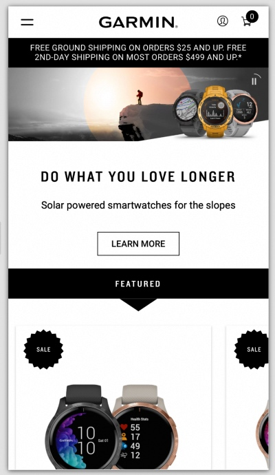

Alignment
Garmin
MiniClip was able to really represent alignment on the mobile application. All of the games that they have listed all are right aligned, and even though the page has a lot going on, the alignment really makes it feel less busy
Clean Design
Apple

Apple's design style is unappologetically clean, sparce and includes plenty of white space. It gives a very unencubmbered presentation of the products and services they are marketing.
Contrast
BYUi Website

My favorite one so far though is the Apple Support page. When you first get on the site, you can tell it is a very clean looking site. They aren't afraid of letting there be white space. It is a very clean design - not too much taking up all the space.